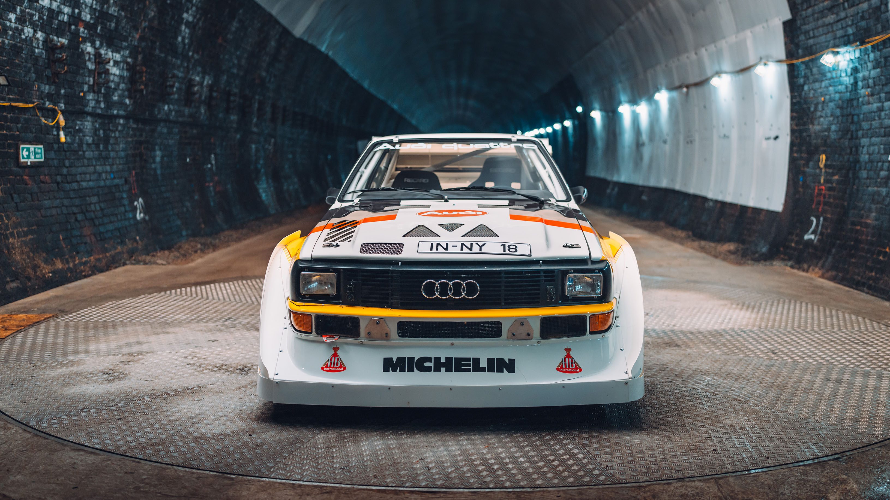
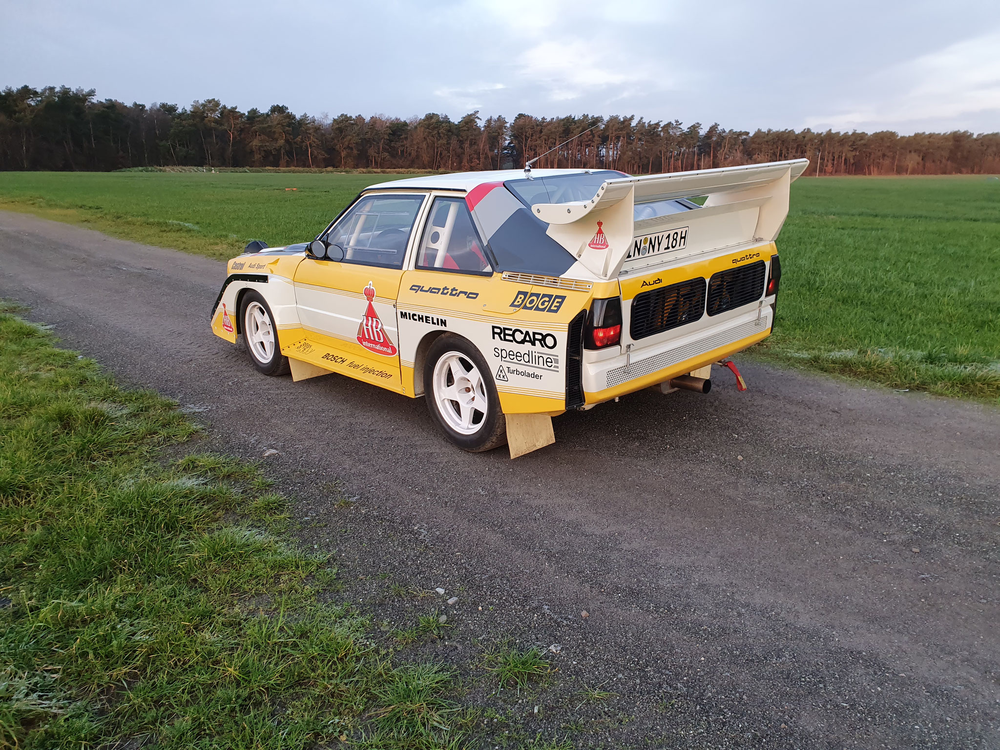
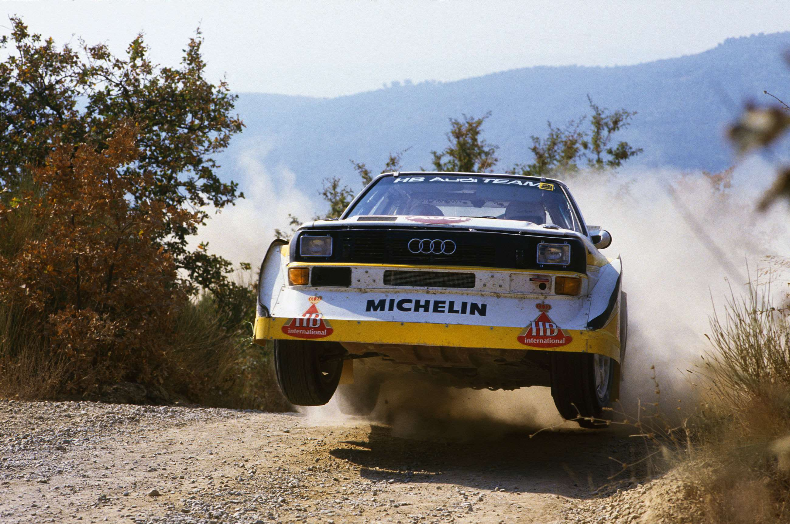

<!DOCTYPE html>
<html lang="hu">

<head>
    <meta charset="UTF-8">
    <meta name="viewport" content="width=device-width, initial-scale=1.0">
    <meta name="theme-color" content="#25272b">
    <meta name="description" content="Audi Sport quattro S1: egy B-csoportos legenda története, műszaki adatai és képgalériája.">
    <link rel="stylesheet" href="style.css">
    <title>S1 quattro — A vadon született</title>

</head>

<body>
    <script>
        document.body.innerHTML = `
  <a class="skip" href="#tartalom">Ugrás a tartalomhoz</a>
  <header class="header">
    <a class="brand" href="#" aria-label="S1 quattro kezdőlap"><span class="brand-mark">S1</span> quattro</a>
    <nav id="menu" aria-label="Fő navigáció">
      <a href="#legenda">A legenda</a><a href="#technika">Technika</a><a href="#orokseg">Örökség</a><a href="#galeria">Galéria <span>↗</span></a>
    </nav>
  </header>

  <main id="tartalom">
    <section id="legenda" class="intro" aria-labelledby="main-title">
      <div class="intro-top"><span class="eyebrow"><span class="square"></span> A B-CSOPORT ÖRÖKSÉGE</span></div>
      <div class="title-row"><h1 id="main-title">S1 quattro<span>.</span></h1><div class="title-note">Négy hajtott kerék.<br>Öt henger.<br><strong>Egy örök legenda.</strong></div></div>
      <div class="hero">
        
        <div class="hero-shade"></div>
        <div class="hero-copy"><span class="hero-label">AUDI SPORT QUATTRO S1 / 1985</span><h2>A vadon<br>született.</h2><p>Amikor a határokat nem betartották.<br>Hanem újraírták.</p><a class="button yellow" href="#technika">Fedezd fel az S1-et <span>↗</span></a></div>
      </div>
      <div class="stats" aria-label="Az 1985-ös S1 főbb adatai">
        <div><span class="stat-name">TELJESÍTMÉNY</span><p>476<span> LE</span></p><small>350 kW · öthengeres turbómotor</small></div>
        <div><span class="stat-name">0–100 KM/H</span><p>3,1<span> s</span></p><small>Közepes váltóáttétellel</small></div>
        <div><span class="stat-name">TÖMEG</span><p>1 090<span> kg</span></p><small>Minden grammnak szerepe van</small></div>
        <div><span class="stat-name">BEMUTATKOZÁS</span><p>1985</p><small>A Sport quattro S1 éve</small></div>
      </div>
    </section>

    <section class="statement section-wrap">
      <span class="eyebrow">A LEGENDA</span>
      <div><h2>Túl vad ahhoz,<br>hogy elfelejtsük<span>.</span></h2><p>Hatalmas szárnyak. Rövid tengelytáv. Az öthengeres turbómotor különleges hangja. Az S1 a B-csoport egyik legkarakteresebb gépe: minden részlete a gyorsaságot szolgálta.</p><p>Az 1985-ös S1 E2 látványos aerodinamikájával új fejezetet nyitott. Walter Röhrl és Christian Geistdörfer San Remóban győzelemre is vitte.</p><a class="text-link" href="#orokseg">Kövesd a történetét <span>↗</span></a></div>
    </section>

    <section id="technika" class="tech section-wrap" aria-labelledby="tech-title">
      <div class="section-heading"><div><span class="eyebrow">MŰSZAKI ADATOK</span><h2 id="tech-title">Mérnöki ösztön.</h2></div><p>Nincs felesleges részlet.<br>Csak a következő kanyar.</p></div>
      <div class="tech-layout">
        <div class="tech-photo"><span>SPORT QUATTRO S1 E2 </span></div>
        <div class="tech-content">
          <div class="tabs" aria-label="Műszaki kategória">
            <button onclick="showSection('spec-panel', 'motor', this)" aria-pressed="true">Motor</button>
            <button onclick="showSection('spec-panel', 'hajtas', this)" aria-pressed="false">Hajtás</button>
            <button onclick="showSection('spec-panel', 'aero', this)" aria-pressed="false">Aerodinamika</button>
          </div>
          <div id="motor" class="spec-panel">
            
            <h3>Öt henger. Tiszta karakter.</h3>
            <p>A turbófeltöltős, öthengeres motor az S1 lelke. Jellegzetes hangja éppúgy a quattro örökségéhez tartozik, mint a fehér-sárga versenyfestés.</p>
            <dl>
              <div><dt>Elrendezés</dt><dd>Soros, 5 henger</dd></div>
              <div><dt>Feltöltés</dt><dd>Turbó</dd></div>
              <div><dt>Teljesítmény</dt><dd>350 kW / 476 LE</dd></div>
              <div><dt>0–100 km/h</dt><dd>3,1 s</dd></div>
            </dl>
          </div>
          <div id="hajtas" class="spec-panel" hidden>
            
            <h3>Négy kerék. Egyetlen cél.</h3>
            <p>A quattro összkerékhajtás a laza talajon is segített útra vinni az erőt. A rövidebb Sport quattro alap a fordulékonyságot szolgálta.</p>
            <dl>
              <div><dt>Hajtás</dt><dd>Állandó összkerékhajtás</dd></div>
              <div><dt>Koncepció</dt><dd>quattro</dd></div>
              <div><dt>Alap</dt><dd>Rövid tengelytávú Sport quattro</dd></div>
              <div><dt>Versenykategória</dt><dd>B-csoport</dd></div>
            </dl>
          </div>
          <div id="aero" class="spec-panel" hidden>
            
            <h3>A forma követi a tempót.</h3>
            <p>A hatalmas hátsó szárny és a feltűnő első légterelők az S1 E2 névjegyei. Az aerodinamikát a versenyzés igényei rajzolták ilyen radikálisra.</p>
            <dl>
              <div><dt>Karakter</dt><dd>Szélesített karosszéria</dd></div>
              <div><dt>Elöl</dt><dd>Nagyméretű légterelők</dd></div>
              <div><dt>Hátul</dt><dd>Jellegzetes hátsó szárny</dd></div>
              <div><dt>Bemutatkozás</dt><dd>1985 · S1 E2</dd></div>
            </dl>
          </div>
        </div>
      </div>
    </section>

    <section id="orokseg" class="heritage" aria-labelledby="history-title">
      <div class="heritage-inner"><span class="eyebrow">TÖRTÉNET</span><div class="heritage-heading"><h2 id="history-title">A nyom, ami<br>megmaradt.</h2></div>
        <div class="years" aria-label="A quattro történetének évei">
          <button onclick="showSection('history-panel', 'year1981', this)" aria-pressed="false">1981</button>
          <button onclick="showSection('history-panel', 'year1984', this)" aria-pressed="false">1984</button>
          <button onclick="showSection('history-panel', 'year1985', this)" aria-pressed="true">1985</button>
          <button onclick="showSection('history-panel', 'year1987', this)" aria-pressed="false">1987</button>
        </div>
        <div id="year1981" class="history-panel" hidden>
          <div><span class="history-year">1981</span><span class="history-tag">AZ ELSŐ VB-SZEZON</span></div>
          <div><h3>Az összkerékhajtás új fejezete.</h3><p>A quattro megérkezik a rali-világbajnokságra. Hannu Mikkola és Arne Hertz Svédországban megszerzi az első vb-futamgyőzelmét, Michèle Mouton és Fabrizia Pons pedig San Remóban ír történelmet.</p></div>
        </div>
        <div id="year1984" class="history-panel" hidden>
          <div><span class="history-year">1984</span><span class="history-tag">A SPORT QUATTRO ÉRKEZÉSE</span></div>
          <div><h3>Rövidebb autó. Nagyobb ambíció.</h3><p>Bemutatkozik a rövid tengelytávú Sport quattro. Az év végén az Audi a gyártók között, Stig Blomqvist és Björn Cederberg pedig a párosok versenyében is világbajnoki címet ünnepelhet.</p></div>
        </div>
        <div id="year1985" class="history-panel">
          <div><span class="history-year">1985</span><span class="history-tag">A B-CSOPORT NYERS ENERGIÁJA</span></div>
          <div><h3>Megszületik az ikon.</h3><p>Az S1 E2 radikális aerodinamikával lép színre. Walter Röhrl és Christian Geistdörfer a San Remo-ralin győzelemre viszi. A sziluett, amit azóta sem lehet összetéveszteni.</p></div>
        </div>
        <div id="year1987" class="history-panel" hidden>
          <div><span class="history-year">1987</span><span class="history-tag">PIKES PEAK · 10:47,85</span></div>
          <div><h3>A felhők fölé.</h3><p>Walter Röhrl egy különlegesen átalakított S1-gyel 10:47,85 alatt teljesíti a Pikes Peak hegyi versenyt. Új rekord és méltó fejezetzárás a quattro raliörökségében.</p></div>
        </div>
      </div>
    </section>

    <section id="galeria" class="gallery section-wrap" aria-labelledby="gallery-title">
      <div class="section-heading"><div><span class="eyebrow">GALÉRIA</span><h2 id="gallery-title">Az S1 képekben.</h2></div><span class="gallery-hint">KATTINTS A KÉPEKRE ↗</span></div>
      <div class="gallery-grid">
        <a class="gallery-item" href="audi1.jpg" target="_blank" rel="noopener" aria-label="Szemtől szemben a legendával – kép nagyítása">
          <span class="gallery-image"><span class="expand">↗</span></span>
          <span class="image-caption">Szemtől szemben a legendával</span>
        </a>
        <a class="gallery-item" href="audi2.jpg" target="_blank" rel="noopener" aria-label="Ahol igazán otthon van – kép nagyítása">
          <span class="gallery-image"><span class="expand">↗</span></span>
          <span class="image-caption">Ahol igazán otthon van</span>
        </a>
        <a class="gallery-item" href="audi3.jpg" target="_blank" rel="noopener" aria-label="Minden szögből összetéveszthetetlen – kép nagyítása">
          <span class="gallery-image"><span class="expand">↗</span></span>
          <span class="image-caption">Minden szögből összetéveszthetetlen</span>
        </a></div>
    </section>

    <section class="closing"><span>ÖT HENGER. NÉGY KERÉK.</span><h2>Örökké quattro.</h2><a href="#" class="back-top">Vissza az elejére ↑</a></section>
  </main>
      `;

        //kivalasztas
        function showSection(group, id, button) {
            for (let section of document.getElementsByClassName(group)) {
                section.hidden = true;
            }

            document.getElementById(id).hidden = false;

            //kijeloles szine
            for (let otherButton of button.parentElement.children) {
                otherButton.setAttribute("aria-pressed", "false");
            }

            button.setAttribute("aria-pressed", "true");
        }
    </script>
</body>

</html>